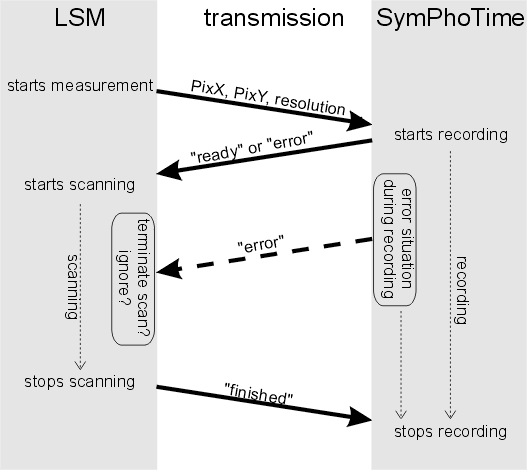

Remote Control |
SymPhoTime 64 Remote Controlled |
| [Related Topics] |
SymPhoTime 64 is designed to do the data acquisition task remote controlled by another application or device, if both are interlinked by WAN or LAN using TCP/IP. Below, a usecase is shown, where a LSM is controlling the data acquisition by the SymPhoTime.
The different phases of the acquisition, i.e. initialisation, recording, post-production and certain error conditions are represented and handled by the handshake of a special remote protocol. You may also inspect the whole data transmissioned invoking the SymPhoTime 64 server dialog.

| Related Topics: |